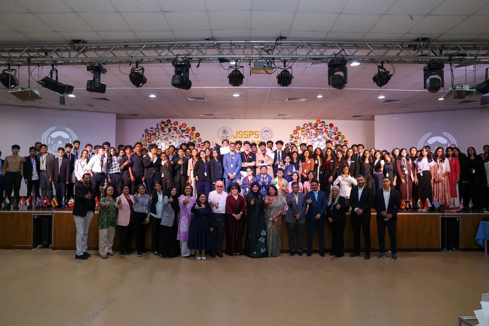

Big ideas.
Brighter futures.
Our Phase 4.
A celebration of the students who ask more, reach further and turn possibility into achievement.
Explore our stories
Seek. Learn. Excel.
Grades 9–12 · JSS Private School
Grades 9–12 · JSS Private School

Young voices. Global perspectives.
JSSPS Model United Nations
Curiosity.
Courage.
Possibility.
Courage.
Possibility.
Every story.
Its own space.
Discover individual research papers, projects, achievements and student stories.
The people.
The work. The possibility.
Explore student portfolios and the achievements, interests and ideas behind them.
This is Phase 4.
The conversations, collaborations and celebrations behind the achievements. Select a photo to take a closer look.